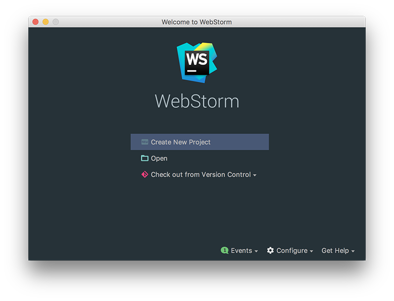

Lab 1 - DonationWeb 1.0 (Express & Node Web App using WebStorm)
In this lab we're going to build a very simple Node Web App using the WebStorm IDE. If you haven't done so already, get it set up by following the WebStorm IDE Setup. This web app won't have much functionality but it will take you through the process of building a Node Web app using WebStorm.
Once completed and running, your Node Server Landing Page will be at http://localhost:3000
Objectives
In this Lab, you will be required to build a simple Node/Express Web App (using WebStorm), called DonationWeb-1.0. We will use the WebStorm IDE to do most of the initial setup for us.
On completion of this lab you'll be able to
- create a skeleton NodeJS app using Express
- run this app as a NodeJS Server
- 'customise' the Node Server Landing (Home) Page
Step 2 - Project Setup
We're going to build our first Node/Express web app using WebStorm, so (assuming you already have it installed) launch your WebStorm IDE and create a new Node/Express Project as follows;

So select 'Create New Project' and you should get something like this
Select a 'Node.js Express App'
and browse to the location you want to store your project files. It's probably a good idea to store all your web apps in a single folder (donationweb for me here) and create a new folder for our specific web app donationweb-1.0 (as below).
Make sue you choose EJS as the templating option (more on this later)
As you can see below, this will auto-generate a Node web app, creating all the necessary folders and files we need to get started. EJS specifies we want to use the Embedded JavaScript Templates (instead of the default which is Jade).
(And you can ignore the image files for the moment)
Now, click on the 'play' button to run/launch your Web App..

and you'll get this in your Run window
If everything goes to plan you should be able to visit http://localhost:3000 in your browser, and see the following
Now, if you'd rather your browser launch automatically you can configure you 'Run' options like so:
Run->Edit Configurations...
and choose the Browser you prefer
Just be sure to 'tick' the 'After Launch' check box
Close the browser tab/window and run your app again, to confirm your new run configuration is correct.
The next step will involve customising our home page (although customising is a bit of a stretch!)
Step 3 - Customising our Home Page
Before we make a start launch your app again and confirm that it automatically launches your preferred browser as well
Now, navigate to you 'routes' folder
Open up the index.js file, and replace the default title value with this one
'DonationWeb App Lab 1'Launch your app again and your project should now look something like this
Now we'll add a small bit of styling, so open up your style.css and add the following
p {
color: red;
font-family: courier;
font-size: 180%;
}Run you app once again and...

For a bit of 'light entertainment' :) head over to https://giphy.com/explore/homer-simpson, pick an animated gif you like and try and customise your Home Page like so
Well Done!! - You've just created, customised and deployed your first Node Web App.